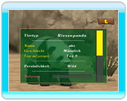

14 |
Tier-Statusbildschirm |
 |
|

Zeige auf ein Tier im Bereich, und drücke
●Tierart die Art des Tieres, das aufgezogen wird. ●Tiername Name, den du dem Tier gegeben hast. ●Geschlecht zeigt an, ob das Tier männlich oder weiblich ist. ●Tage aufgezogen zeigt, wie viele Tage verstrichen sind, seitdem du mit der Aufzucht des Tieres begonnen hast. ●Persönlichkeit die aktuelle Persönlichkeit des Tieres. ●Zuneigung nimmt täglich aber langsam zu, wenn die Magen- und Energieparameter des Tieres dauerhaft hoch sind. Wenn im Bereich des Tieres allerdings Unordnung herrscht, nimmt die Zuneigung an diesem Tag auch dann nicht zu, wenn die Magen- und Energieparameter hoch sind. ●Energie nimmt jedes Mal zu, wenn das Tier gestreichelt oder gerufen wird. Wenn im Bereich des Tieres Unordnung herrscht, nimmt die Energie allerdings schneller ab. ●Magen nimmt mit der Zeit nach und nach ab und zeigt so an, dass das Tier hungrig wird. Du musst es unbedingt füttern, bevor sein Magen ganz leer ist. ●Wie oft gefuttert zeigt an, wie oft du das Tier gefüttert hast. ●Wie oft gestreichelt zeigt an, wie oft du das Tier gestreichelt hast. ●Wie oft gerufen zeigt an, wie oft du das Tier gerufen ist. ●Trächtig wird nur für ein trächtiges weibliches Tier angezeigt. ●Vater zeigt den Namen des Vaters des Tieres. (Wird nicht für ein Tier angezeigt, das aus dem Tier- Center stammt.) ●Mutter zeigt den Namen der Mutter des Tieres. (Wird nicht für ein Tier angezeigt, das aus dem Tier- Center stammt.) |
 |
 |
 |